De l’installation à la publication TikTok d’une vidéo complète, étape
par étape.
Logo FruchtDrama
0. Ce qu’il faut envoyer
Un seul fichier :
FruchtDrama-0.1.85.zip. Il contient le logiciel et
ce guide (GUIDE-UTILISATEUR.pdf, à la racine du dossier).
Il ne contient aucun compte, aucune clé, aucune production : chacun
utilise ses propres comptes (ChatGPT, Google Flow, et
si voulu Claude, Grok, TikTok). Aucun mot de passe n’est demandé.
Envoi conseillé : WhatsApp (en « Document », pas en « Photo »),
Google Drive ou e-mail. Message type :
Voici FruchtDrama. Dézippe FruchtDrama-0.1.85.zip dans
tes Documents, puis suis GUIDE-UTILISATEUR.pdf (dans le
dossier) depuis l’étape 1. Il faut Google Chrome, Python 3.11 ou 3.12 et
FFmpeg : le guide explique tout.
1. Installer (une seule fois)
Dézipper FruchtDrama-0.1.85.zip dans
Documents : on obtient un dossier
FruchtDrama. N’importe quel emplacement convient, mais ne
lancez rien depuis l’intérieur du zip.
Installer Google Chrome, Python 3.11 ou
3.12 64 bits (python.org, cocher « Add python.exe to PATH ») et
FFmpeg (Windows :
winget install --id Gyan.FFmpeg --exact dans un terminal,
puis fermer le terminal).
Double-cliquer Installer.cmd (Windows)
ou lancer installer.sh (Linux). Lire les conditions, taper
ACCEPTER. L’installation télécharge ce qu’il faut
(plusieurs minutes) et relie ce dossier à Chrome, sans
droits administrateur.
C’est tout : pas besoin de lancer le studio.
L’extension (étape 2) le démarre toute seule, à chaque ouverture de
Chrome, même après un redémarrage du PC. Si vous déplacez le dossier,
relancez Installer.cmd une fois.
Si le studio ne peut pas démarrer, la fenêtre FruchtDrama affiche
« Le studio FruchtDrama ne tourne pas » avec la raison
(installation à faire, port occupé…) et un bouton
Réessayer. En secours, Lancer-Studio.cmd
démarre le studio à la main.
2. Ajouter l’extension
(le « plugin ») à Chrome
Dans Chrome, ouvrir
chrome://extensions.
Activer Mode développeur (en haut à droite).
Cliquer Charger l’extension non empaquetée et
choisir le dossier
FruchtDrama/extension.
La carte FruchtDrama apparaît avec le logo
ci-dessus (le numéro affiché est celui de votre version) :
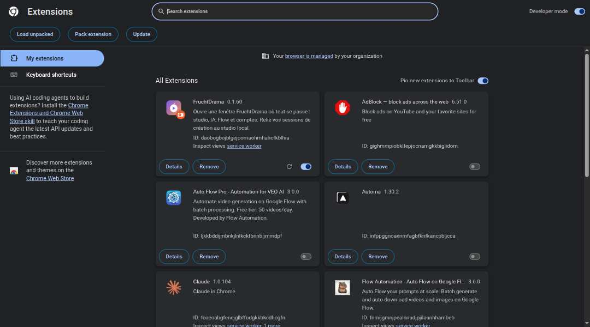
Page des extensions avec la carte
FruchtDrama (capture d’une version antérieure)
Après chaque mise à jour de FruchtDrama : revenir
sur chrome://extensions et cliquer la flèche ronde
⟳ de la carte FruchtDrama (recharger l’extension). Sans
cela, les nouveautés de l’extension (choix du modèle Claude, contrôle de
la miniature…) ne marchent pas.
3. Épingler l’extension
Cliquer sur la pièce de puzzle de Chrome, puis sur la punaise à côté
de FruchtDrama. L’icône reste dans la barre (encadrée
en orange) :
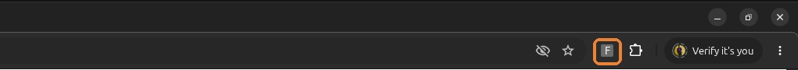
Icône FruchtDrama épinglée
Un clic sur cette icône ouvre la fenêtre FruchtDrama
: le studio, plus ChatGPT, Flow et les autres sites dans des onglets,
avec vos sessions. Rien à copier : l’extension se relie
seule au studio.
4. Ajouter ses comptes
Page Mes comptes, en haut : une carte par site.
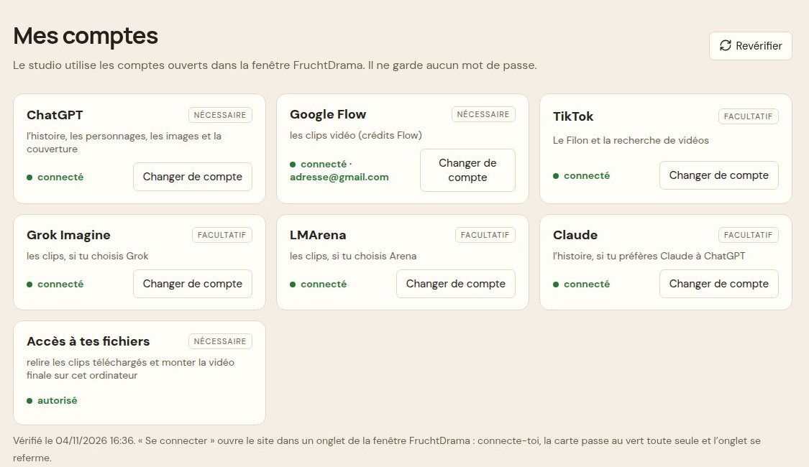
Mes comptes : une carte par site (adresse
masquée)
Chaque carte dit si vous êtes connecté. ChatGPT,
Google Flow et « Accès à tes fichiers » sont
nécessaires ; TikTok, Claude, Grok et LMArena sont
facultatifs.
Changer de compte ouvre le site dans un onglet de
la fenêtre : connectez-vous vous-même. La carte passe
au vert toute seule et l’onglet se referme.
Plus bas, Comptes Google Flow : pour utiliser
plusieurs comptes et leurs crédits.
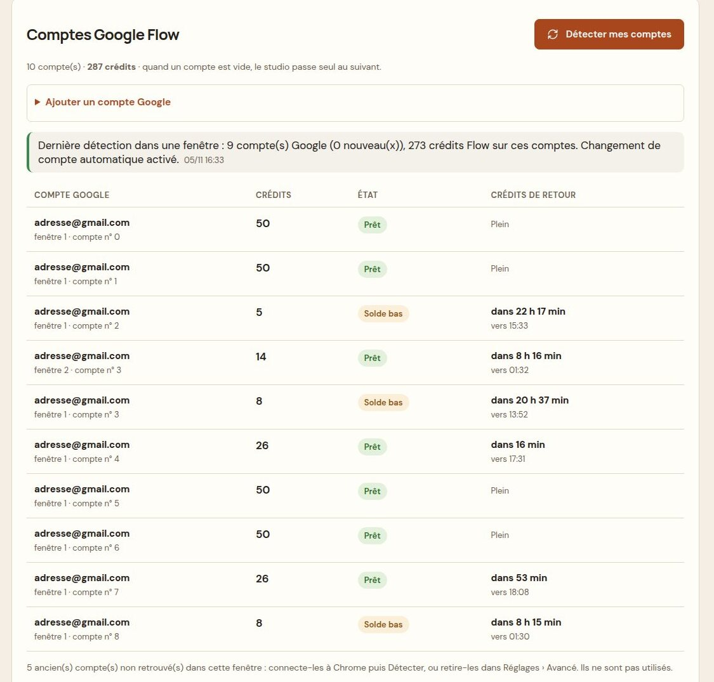
Comptes Google Flow (adresses
masquées)
Dans la fenêtre FruchtDrama, ajoutez chaque compte Google à Chrome :
photo de profil en haut à droite d’une page Google › Ajouter un
compte (ou Ajouter un compte Google sur cette
page).
Cliquez Détecter mes comptes : le studio lit
l’adresse et les crédits réels de chaque compte.
C’est tout : quand un compte n’a plus de crédits, le studio
passe seul au suivant.
État : Prêt (paie au moins un
clip), Solde bas (ne paie plus un clip : sauté),
Vide (0 crédit). Crédits de retour :
l’heure où les crédits gratuits du compte reviennent (24 h après la
première dépense).
Bandeau rouge en haut d’une page = un service est à sa limite (ex. «
Limite Grok vidéos atteinte, ça revient vers 08:45 »). Attendez, ou
connectez un autre compte de ce site puis J’ai changé de
compte.
5. Trouver une idée : Le Filon
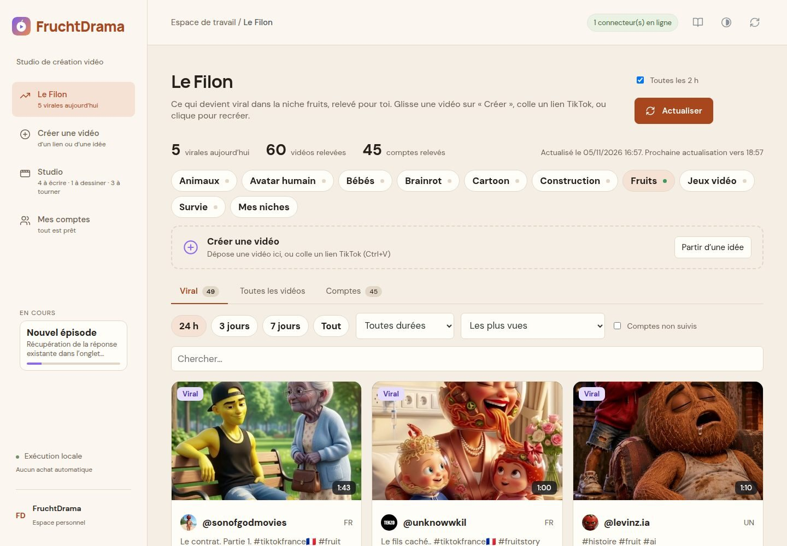
Le Filon
Les vidéos qui marchent, avec leurs vrais chiffres :
vues, vues par heure, croissance sur 24 h, engagement,
durée.
9 niches toujours visibles (Animaux, Avatar humain,
Bébés, Brainrot, Cartoon, Construction, Fruits, Jeux vidéo, Survie),
avec un point d’état ; Mes niches pour ajouter les
vôtres.
Onglets Viral / Toutes les vidéos / Comptes.
Période 24 h par défaut (puis 3 jours, 7 jours,
Tout).
Durée : toutes, 1 min ou moins, 1 min à 1 min 30, 1 à 2 min, 2 min
et plus.
Tris : les plus vues, les plus rapides, la plus forte croissance, le
meilleur engagement, Au-dessus de leur habitude (une
vidéo qui fait bien mieux que les autres du même compte), Les
plus récentes.
Le Filon s’actualise seul toutes les 2 h ; le
chiffre « virales aujourd’hui » apparaît aussi dans le menu.
Recréer cette vidéo lance une histoire inspirée de
celle-ci. Vous pouvez aussi glisser une carte sur « Créer une vidéo » ou
coller un lien TikTok n’importe où (Ctrl+V).
6. Créer une vidéo
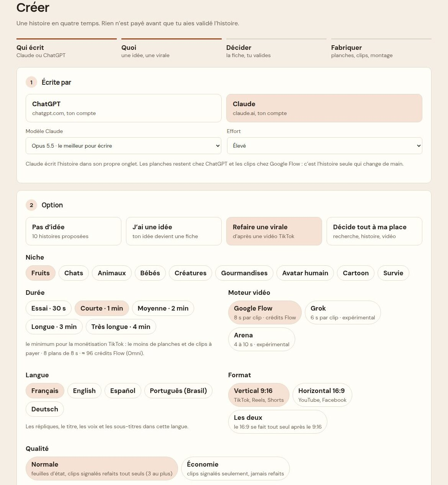
Créer : Claude choisi, avec son modèle et
son effort
Écrite par : ChatGPT ou Claude. Avec
Claude, deux choix en plus :
Modèle Claude : Opus 5.5 (le meilleur pour écrire,
par défaut), Fable 5.1 (le plus puissant) ou Sonnet 5.5 (rapide) ;
Effort : Élevé (par défaut), Extra ou Moyen. Le
dernier choix est gardé. Les images restent toujours dessinées par
ChatGPT et les clips faits par Google Flow : seule l’histoire change de
main.
Option : Pas d’idée (10 histoires
proposées), J’ai une idée, Refaire une virale (lien
TikTok, voir 6 bis), Décide tout à ma place.
Durée : Essai · 30 s, Courte · 1 min (le
minimum pour être payé par TikTok), Moyenne · 2 min, Longue · 3
min, Très longue · 4 min. Le nombre de plans et le coût Flow estimé
s’affichent dessous.
Moteur vidéo : Google Flow (conseillé), Grok ou
Arena (expérimentaux).
Langue : cinq langues — Français,
English, Español, Português (Brasil), Deutsch. Répliques, titre, voix et
sous-titres sont dans cette langue.
Format (Vertical 9:16, Horizontal 16:9, Les deux)
et Qualité (Normale, ou Économie : moins de contrôles,
rien n’est refait).
Fabrication : « Lancer la production
automatiquement » coché = tout s’enchaîne après la fiche ; décoché =
vous validez la fiche vous-même avant tout paiement. Puis
Personnages (Simple ou Détaillé),
Sous-titres (Sans ou Avec karaoké), Essai à
blanc des clips (tout est préparé, rien n’est envoyé ni payé)
et Réglages Flow.
Puis : choisir une des dix histoires, relire la
fiche de décision et Valider. Rien
n’est payé avant.
6 bis. Refaire une virale
Choisir l’option Refaire une virale : la partie 3
devient « La vidéo à refaire ».
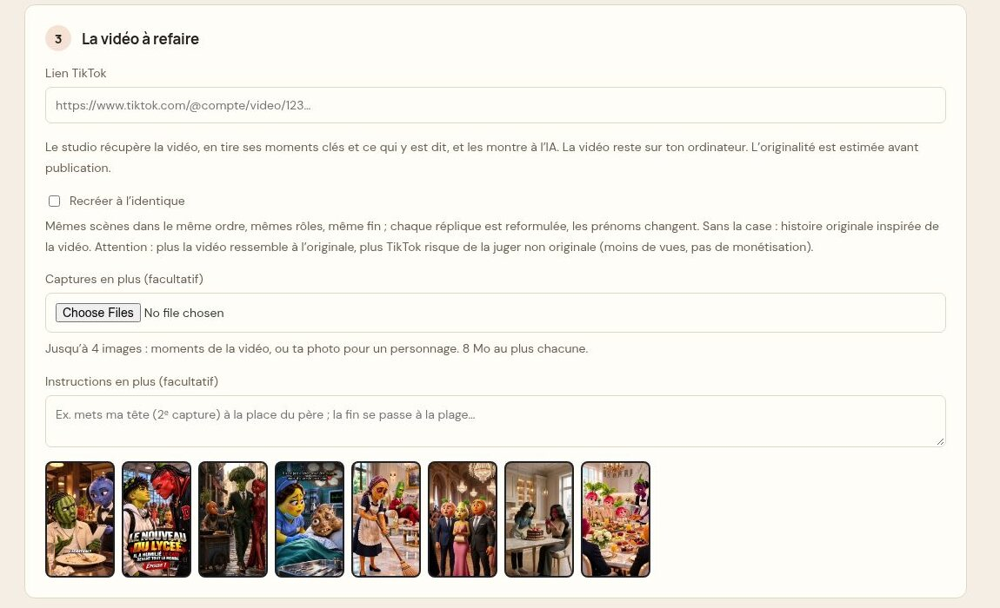
Refaire une virale : lien, Recréer à
l’identique, captures et instructions
Lien TikTok de la vidéo. Le studio la récupère, en
tire les moments clés et ce qui est dit, et les montre à l’IA. La vidéo
reste sur votre ordinateur.
Case vide : une histoire originale inspirée de la
vidéo (même mécanique d’émotion, autres personnages, lieux et
répliques).
Case Recréer à l’identique cochée : la même
histoire, scène par scène — mêmes personnages, mêmes lieux,
mêmes événements, même fin ; seules les répliques sont reformulées et
les prénoms changent. Attention : plus c’est proche de l’original, plus
TikTok risque de juger la vidéo non originale (moins de vues, pas de
rémunération).
Captures en plus (jusqu’à 4 images, par exemple
votre photo pour un personnage) et Instructions en plus
: facultatifs.
En bas de la page, Vidéos déjà récupérées liste les
vidéos déjà refaites, avec Ouvrir l’épisode :
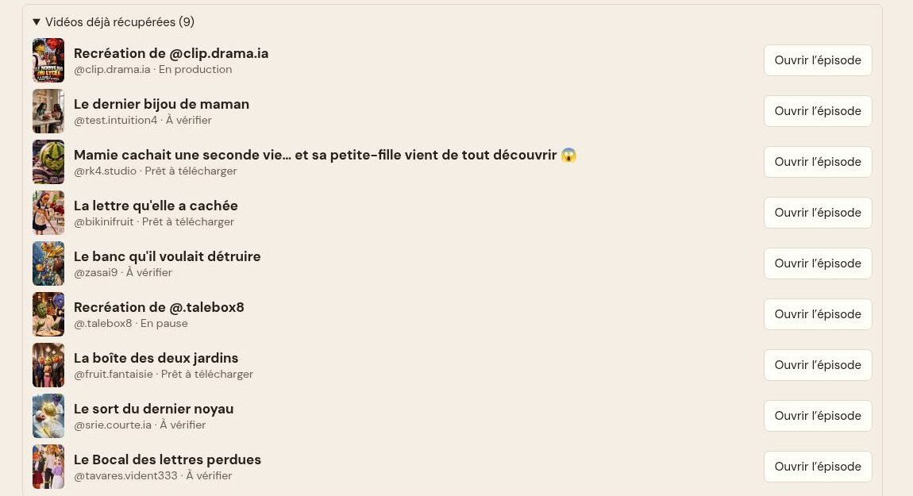
Vidéos déjà récupérées
7. Des histoires
construites sur l’émotion
Toutes les histoires suivent ce qui fait les vidéos virales :
une victime attachante et un antagoniste
détestable (patronne qui humilie, belle-mère cruelle,
milliardaire déguisé, épouse trahie, fille rejetée, enfant moqué, fils
ingrat, fausse accusation…) ;
une injustice qui s’aggrave, puis un
basculement et une revanche visible
;
des réactions qui se voient sur les visages, et des
transitions qui laissent une tension pour donner envie
de voir la suite ;
un appel de fin (trois au choix dans la fiche,
modifiables).
La fiche de décision montre tout avant de payer :
moteur de l’histoire, obstacle, retournement, 3 titres, 3 premières
répliques, appel de fin, casting.
8. Suivre la fabrication :
Studio
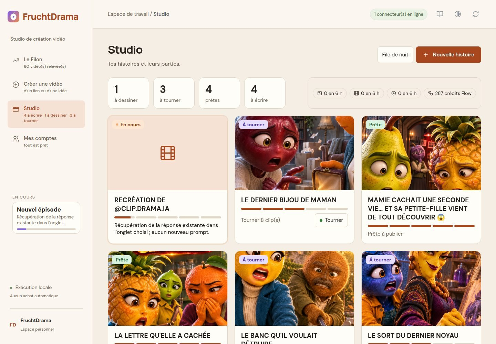
Studio : une carte par
histoire
Une carte par histoire : étape (À écrire, À dessiner, À
tourner, Prête), barre de progression, prochaine
action et son bouton direct. Les compteurs en haut sont comptés
par histoire. Une histoire en fabrication porte la pastille En
cours, et la carte En cours du menu montre ce
qui se passe maintenant.
Cliquer une histoire montre ses parties et ses
personnages ; Créer la partie 2 fait la suite avec les
mêmes personnages (rien à repayer pour eux) :
Vidéo finale : 1080 × 1920, sous-titres karaoké,
accroche écrite à l’écran les 3 premières secondes,
score d’originalité. Télécharger, Écrire la
suite….
+ Version horizontale 16:9 et
Langues créent une version liée.
▶ Boucle complète : elle
décide seule
▶ Boucle complète reprend exactement là où ça s’est
arrêté et va jusqu’à la vidéo finale. Aux contrôles qualité,
elle décide seule : des paroles un peu différentes du
texte ou une petite réserve sur l’image sont acceptées sans
nouveau crédit, et le montage continue. Seul un fichier
illisible l’arrête. Pause vous rend la main.
Un bandeau en haut de l’épisode dit ce qui demande
votre regard :
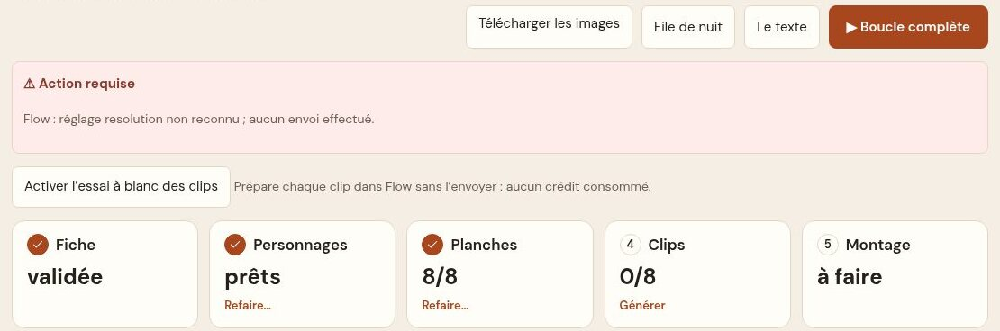
Bandeau rouge « Action requise
»
Rouge « Action requise » : le studio vous attend
(la raison est écrite). Faites ce qui est demandé, puis ▶ Boucle
complète.
Orange « Décidé automatiquement — à vérifier avant de
publier » : les scènes acceptées seules par la boucle.
Regardez-les avant de publier.
Personnages
Une pastille par personnage (nom, point vert s’il
est dessiné). Un clic la déplie : description, image,
Remplacer. À côté du titre, Simple |
Détaillé choisit le niveau tant que rien n’est dessiné ;
ensuite seul le niveau choisi s’affiche. Refaire est à
droite.
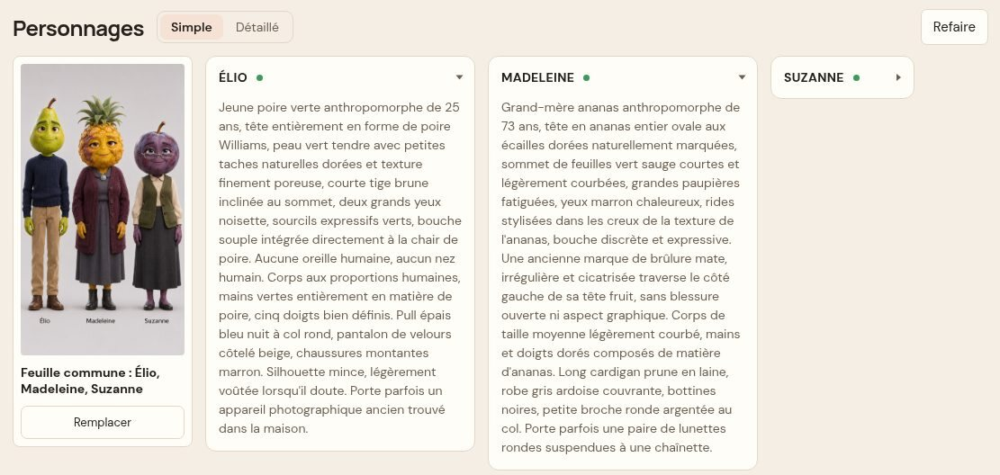
Personnages en pastilles, deux
dépliées
Au fil de l’histoire : quand l’histoire change
vraiment l’apparence d’un personnage (blessure, vêtement déchiré,
maquillage qui coule…), une section apparaît sous les personnages : «
Dès la scène N », « NOM : changement ». En qualité
Normale, ChatGPT redessine la feuille du personnage
avec ce changement, et toutes les planches suivantes l’utilisent :
l’apparence reste la même jusqu’à la fin. En Économie, pas de feuille
d’état.
Scènes
Un clic sur une scène montre la planche et le clip côte à
côte, les répliques, ce qui a été entendu, et les boutons
Copier le prompt, Modifier le texte,
Remplacer, Refaire… :
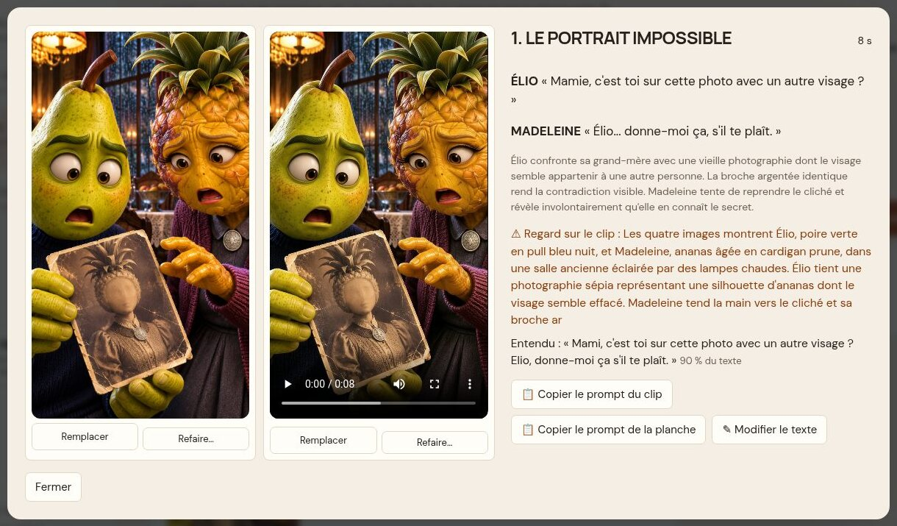
Une scène : planche et clip
10. Avant de
publier : miniature, hook et originalité
Miniature contrôlée : pendant la boucle complète,
ChatGPT regarde la miniature et la redessine une fois s’il voit un
défaut (titre coupé ou mal écrit, visage déformé, personnage qui ne
ressemble pas). Réglage dans Mes comptes (section 12).
Hook : la scène 1 s’ouvre sur l’instant le plus
fort, la première réplique choc tombe dans les 2 premières secondes, et
une accroche est écrite à l’écran.
Originalité (bouton Contrôler sous
la miniature) : un pourcentage estimé et une
recommandation.
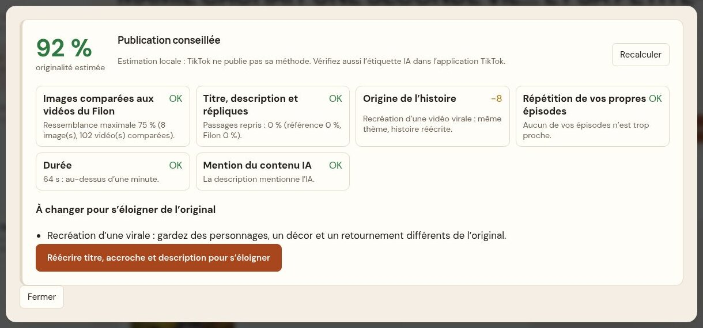
Contrôle d’originalité
Score
Que faire
80 % et plus
Publication conseillée
60 à 79 %
Corrigez avant de publier : suivez les conseils, ou
Réécrire titre, accroche et description pour
s’éloigner
moins de 60 %
Publication déconseillée : refaites les planches
signalées ou recréez l’histoire
Estimation locale : TikTok ne publie pas sa méthode. Elle compare vos
images aux vidéos du Filon, vos textes à la vidéo d’origine, signale la
répétition de vos propres épisodes, la durée (moins d’1 min = pas de
rémunération) et l’absence de mention IA.
11. Publier sur TikTok
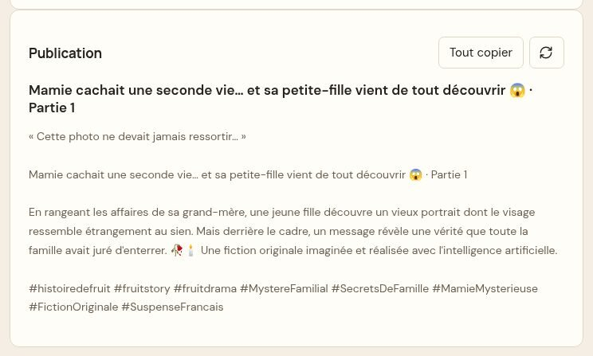
Bloc Publication
Le bloc Publication est prêt à coller :
accroche entre guillemets, « Titre · Partie N
», description, appel de fin, puis
hashtags de la niche.
Vidéo finale › Télécharger (MP4 1080 × 1920).
Miniature › Télécharger ; Publication ›
Tout copier.
Dans TikTok (téléphone ou tiktok.com/upload) : importer le MP4,
coller le texte, choisir la miniature, activer « Contenu généré
par l’IA », publier.
Pour une série : Écrire la suite… sur l’épisode, ou
Créer la partie 2 sur la page de l’histoire.
12. Réglages (Mes comptes)
Sous les comptes, les Réglages sont ouverts : langue
des nouveaux épisodes, montage (transitions, coupes rapides, silences,
karaoké), contrôles, sauvegardes, En cas de souci,
Apparence, et Avancé (plié).
Contrôles et essai à blanc : ce que la boucle
complète vérifie pour les planches, les clips et la
miniature (Corriger toute seule / Signaler seulement / Pas de
contrôle), et si ChatGPT regarde aussi les clips.
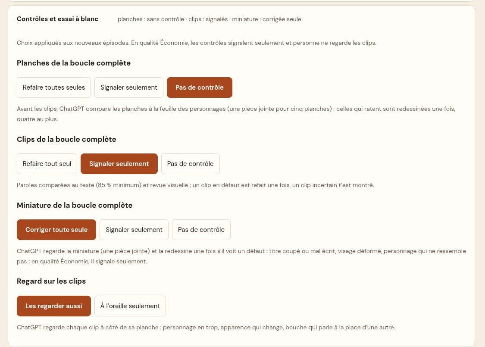
Contrôles de la boucle
complète
En cas de souci : Copier le rapport de
panne, puis le coller dans votre message à votre formateur (ni
mot de passe, ni code, ni adresse e-mail dedans).
Apparence : 7 palettes — Ardoise,
Laiton, Lagon, Cinéma, Papier (clair, celle de départ),
Verre, Éditorial. Le bouton rond en haut de l’écran passe de Papier à
Ardoise et inversement.
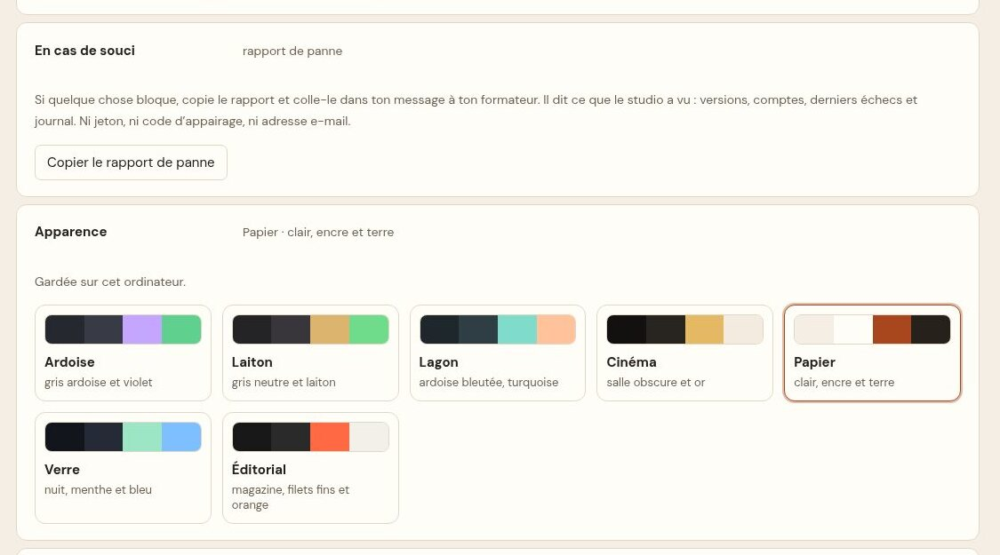
En cas de souci et Apparence
13. En cas de souci
Bandeau rouge « Limite atteinte » : attendre
l’heure indiquée, ou changer de compte puis « J’ai changé de compte
».
Flow « Solde bas » partout : ajoutez des comptes
Google avec des crédits, puis Détecter mes
comptes.
Connexion requise / vérification anti-robot : la
faire vous-même dans l’onglet, puis ▶ Boucle complète.
FruchtDrama ne contourne jamais ces vérifications.
Une nouveauté ne marche pas après une mise à jour :
recharger l’extension (chrome://extensions ›
⟳ sur la carte FruchtDrama).
Sinon : Mes comptes › En cas de souci ›
Copier le rapport de panne.
FruchtDrama — studio local. Aucun achat automatique, aucun mot de
passe enregistré.